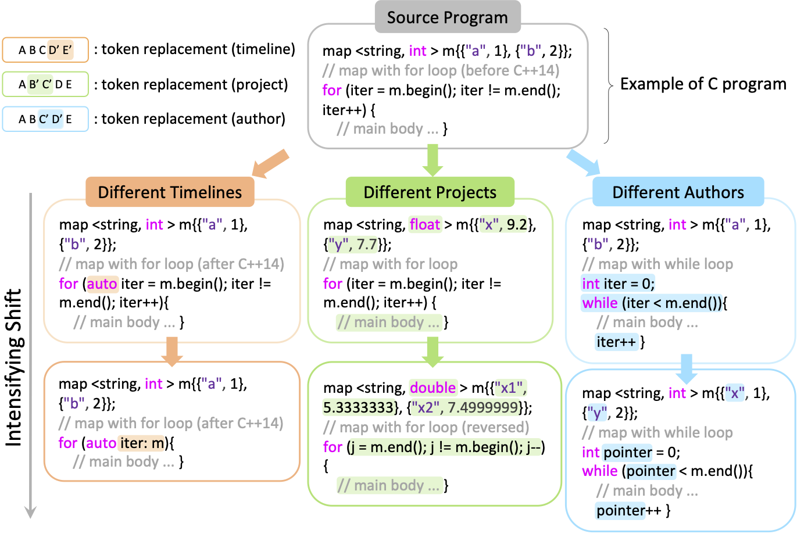
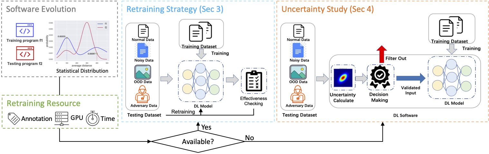
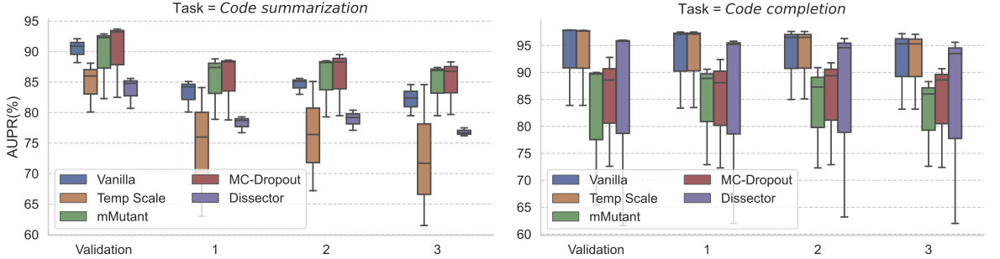
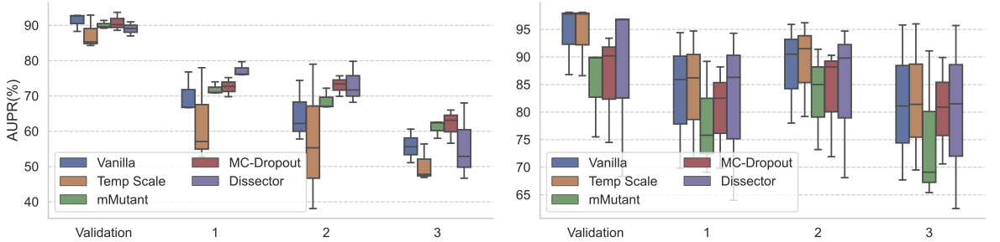
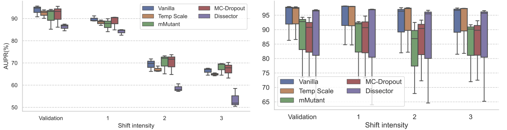
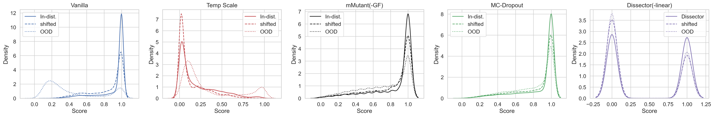
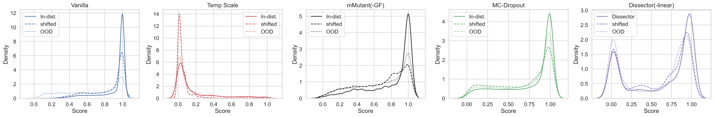
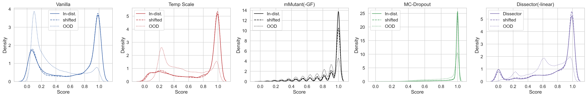
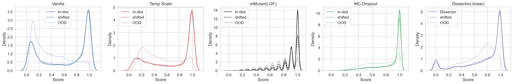

Supplementary information about our three shifted datasets.
| Different Timelines | Training | Validation | Shift1 | Shift2 | Shift3 |
|---|---|---|---|---|---|
| #Files | 26436 | 2538 | 2538 | 2538 | 2538 |
| #Instances (for CS) | 185557 | 17598 | 18226 | 17855 | 17296 |
| #Tokens (for CS) | 193284 | 193284 | 193284 | 193284 | 193284 |
| #Paths (for CS) | 702502 | 702502 | 702502 | 702502 | 702502 |
| #Functions (for CS) | 10737 | 10737 | 10737 | 10737 | 10737 |
| #Instances (for CC) | 8679891 | 849137 | 844491 | 918146 | 891795 |
| #Vocabs (for CC) | 47858 | 47858 | 47858 | 47858 | 47858 |
| Different Projects | Training | Validation | Shift1 | Shift2 | Shift3 |
|---|---|---|---|---|---|
| #Files | 8500 | 2489 | 4141 | 2489 | 2558 |
| #Instances (for CS) | 37439 | 16912 | 37262 | 29090 | 11952 |
| #Tokens (for CS) | 54259 | 54259 | 54259 | 54259 | 54259 |
| #Paths (for CS) | 399072 | 399072 | 399072 | 399072 | 399072 |
| #Functions (for CS) | 10400 | 10400 | 10400 | 10400 | 10400 |
| #Instances (for CC) | 2445945 | 1070766 | 2238540 | 1156032 | 650009 |
| #Vocabs (for CC) | 15024 | 15024 | 15024 | 15024 | 15024 |
| Different Authors | Training | Validation | Shift1 | Shift2 | Shift3 |
|---|---|---|---|---|---|
| #Files | 7137 | 3059 | 2760 | 2378 | 2680 |
| #Instances (for CS) | 63198 | 28279 | 24307 | 17179 | 20263 |
| #Tokens (for CS) | 388017 | 388017 | 388017 | 388017 | 388017 |
| #Paths (for CS) | 450702 | 450702 | 450702 | 450702 | 450702 |
| #Functions (for CS) | 11755 | 11755 | 11755 | 11755 | 11755 |
| #Instances (for CC) | 3782628 | 1655909 | 1479820 | 891245 | 1035757 |
| #Vocabs (for CC) | 19118 | 19118 | 19118 | 19118 | 19118 |
Supplementary information about Java-small (in-dist) and Python150k (OOD) datasets.
| Java-small | Training | Validation | Test |
|---|---|---|---|
| #Files | 89393 | 3875 | 5269 |
| #Instances (for CS) | 665115 | 23505 | 56165 |
| #Tokens (for CS) | 493753 | 493753 | 493753 |
| #Paths (for CS) | 1223820 | 1223820 | 1223820 |
| #Functions (for CS) | 12635 | 12635 | 12635 |
| #Instances (for CC) | 38498159 | 1062852 | 2091806 |
| #Vocabs (for CC) | 155555 | 155555 | 155555 |
| Python150k | Training | Validation | Test |
|---|---|---|---|
| #Files | 85000 | 15000 | 50000 |
| #Instances (for CS) | 682493 | 167589 | 417699 |
| #Tokens (for CS) | 387979 | 387979 | 387979 |
| #Paths (for CS) | 450993 | 450993 | 450993 |
| #Functions (for CS) | 22180 | 22180 | 22180 |
| #Instances (for CC) | 59386356 | 11519873 | 32458085 |
| #Vocabs (for CC) | 332166 | 332166 | 332166 |
AUPR scores for the 5 uncertainty methods under three program data shifts.



Confidence distribution of the five methods for two common models (BiLSTM & CodeBERT) on both tasks (CS & CC).



